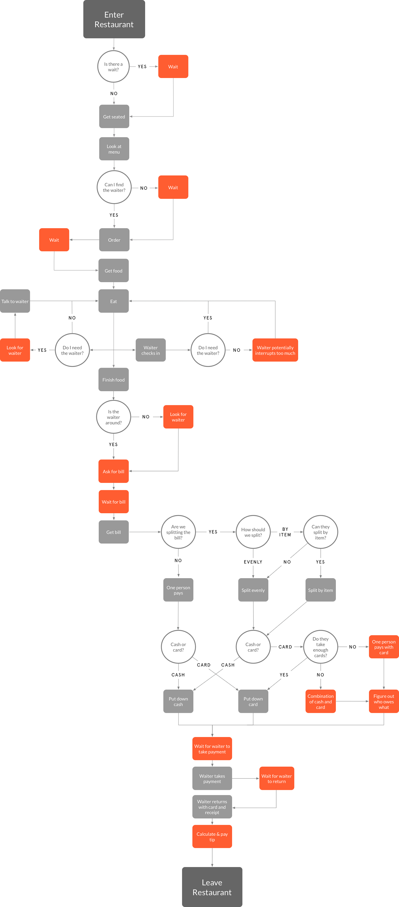
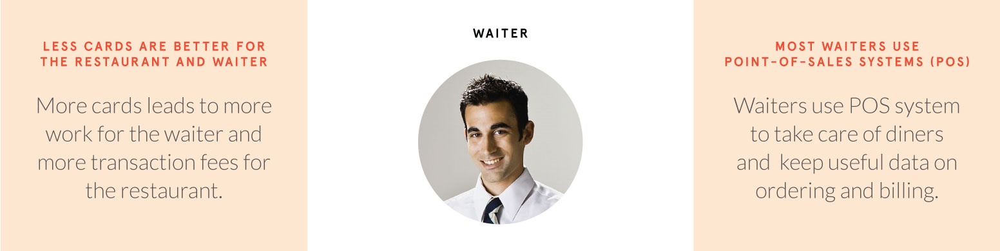
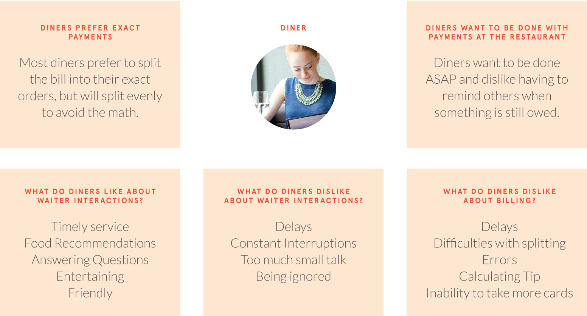
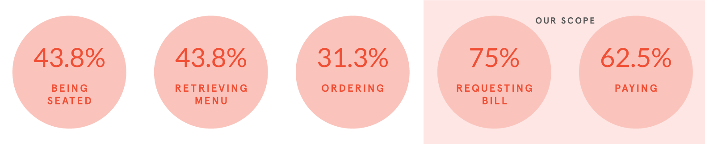
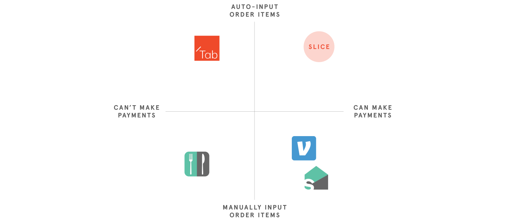
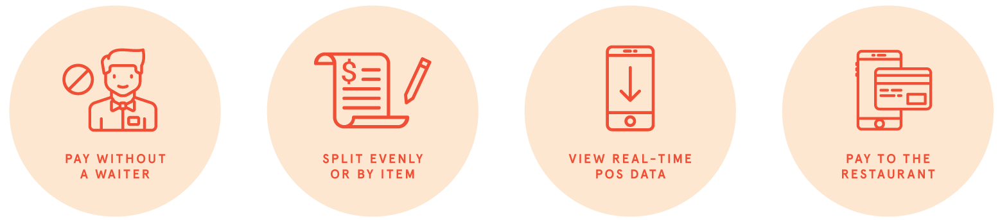
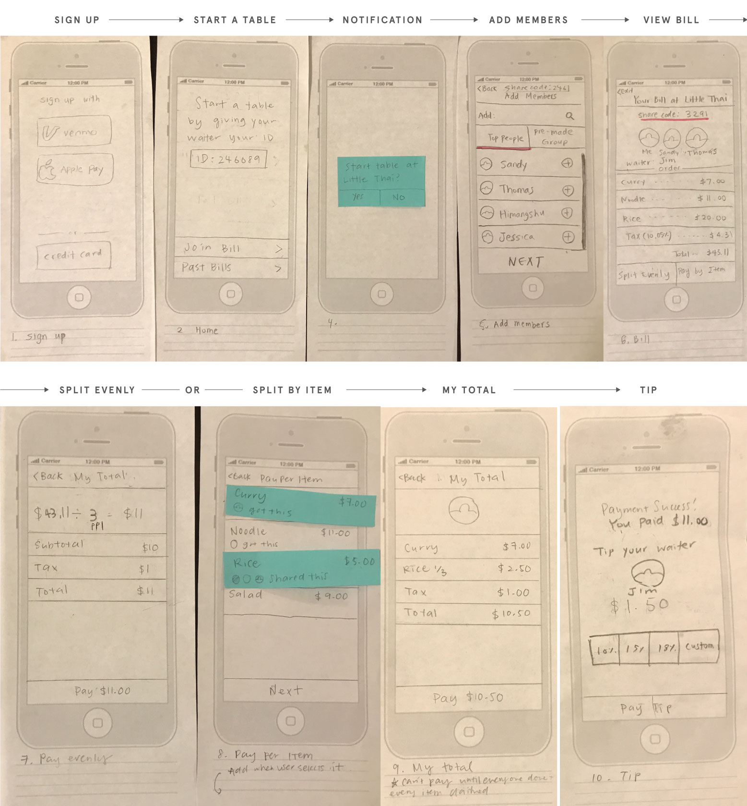

Slice
Team
Jessica Son (UX Designer), Himangshu Borah (UX/UI Designer), Thomas Tran (Researcher)
My Role
Interviews, survey, low-fi & hi-fi prototyping, logo design
Process
8 weeks for research, interviews, survey, competitive analysis, ideation, sketching, prototyping, testing, and evaluation
Design Question
How might we improve dining experiences at sit-down restaurants?
User Journey of a Diner
We created a user journey of a diner to help us visualize the areas we needed to target for our research. Potential sources of frustration are highlighted in orange.
Research Findings
We conducted 5 semi-structured interviews with diners and waiters combined and created a survey that got about 30 respondents. We aimed to understand the dining experience starting from your first interaction to paying your bill.
 What interactions do people prefer not to have a waiter for?
Managing Scope
Based on our findings, waiter interaction should be increased during ordering and decreased during billing. People desire a customized service with human interaction in regards to food, but not when it comes to payment. Therefore, we need to focus on giving users more control over the billing process.
Competitive Analysis
To understand how billing is currently being addressed, we looked at our direct and indirect competitors. None of them address the entire billing process or allow diners to pay to the restaurant. We aimed to improve upon the strengths of our competitors and create a more comprehensive solution.
2x2 Matrix
An ideal comprehensive solution would be able to make payments and automatically access the billing data. We used a 2x2 matrix to map out how current solutions addressed both. Since none of these solutions successfully offer both, we knew that Slice could offer unique value on the market.
Solution
Since diners don't need waiter interaction to make payments, we can eliminate the interaction by giving users complete control over the billing process. To do so, we need to give diners faster access and control to billing data from the POS system that waiters already use. Today 81% of restaurants use a POS system and are advanced enough to integrate with other software.
What does Slice do?
Paper Prototyping
We decided to create paper prototypes because it was the quickest way to test our idea on a tight timeline.
Usability Test Findings
We conducted guerrilla tests by approaching diners at restaurants. We iterated on our design for the high fidelity prototype based on the test findings, refining our user flow, design, and wording. In addition, we built out our design to also anticipate some edge cases.
Jane is grabbing lunch at Little Thai with her best friends. She logs in to Slice and shares her ID number with the waittress so she can connect to Little Thai.
The waittress inputs her ID into the POS system and takes their order.
When they are done eating, Jane opens Slice and adds her group, Best Friends, to the Little Thai bill so they can also pay directly to the restaurant.
Jane's friend Ian gets a notification and sees that Jane added her to the Little Thai bill. He accepts and views the bill.
Jane selects pay by item. Jane and her two friends each select the Thai noodle because they shared it. She sees the price divide into 3. She also selects two orders of the Mixed Vegetables and a Crab Delight. She views her individual total, selects her tip amount, and pays.
After everyone pays their portion, the app notifies each diner that an item was unclaimed. Ian realizes that he forgot to select the Grilled Salmon, so he selects it and pays for the item before Jane's card gets charged.
some challenges with pay by item
The pay by item scenario was paricularly difficult to design for. Even though some of these are edge cases, we felt that as a bill splitting app we had to anticipate complex splitting scenarios and design interactions that make something complicated more straightforward.
Portion Splitting Version 1
Originally, we used a drop down menu to indicate duplicate orders of the same item. Diners select the quantity they want to pay for. However, this does not allow diners to split one order of the duplicate items.Portion Splitting Version 2
We came up with another drop down menu that allows diners to select the duplicate items individually. Diners that want to split a Mixed Vegetable just tap the same one their friends tapped. Howeover, when we tested this version users found it unintuitive compared to version 1.New Portion Splitting
We went back to version 1 and added an option button so that users that want to pay a different quantity can enter the exact share or dollar amount.Some Assumptions We Made
We assumed that restaurants will have a POS system that can integrate with our app so we can access their POS data. We also assumed our users are going through the billing process at the same time, and will be able to easily communicate with each other what items they are splitting to pay the right amount.
What I learned
This project made me more conscious of the role money plays within the social aspect of dining. People care about money but also want to be socially conscious and will not discuss money until the bill arrives. We made sure our solution allows diners to focus on eating and socializing so they don't need to open the app until they want to pay.
Further Development
The split by item scenario could get complicated because of all the splitting possibilities, so it needs more usability testing to be successful. We also have not tested our solution with a group of users that are splitting the same bill. I am sure there are still cases we have not anticipated.